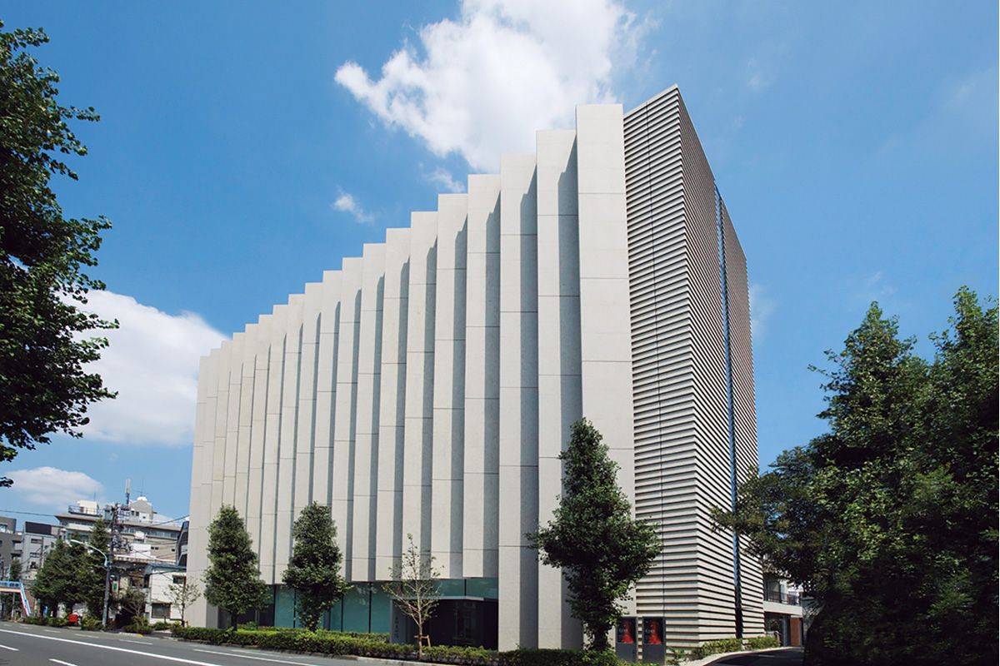
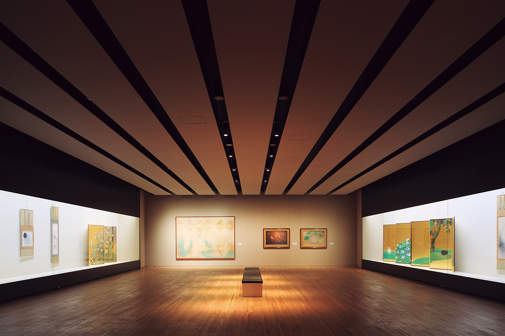
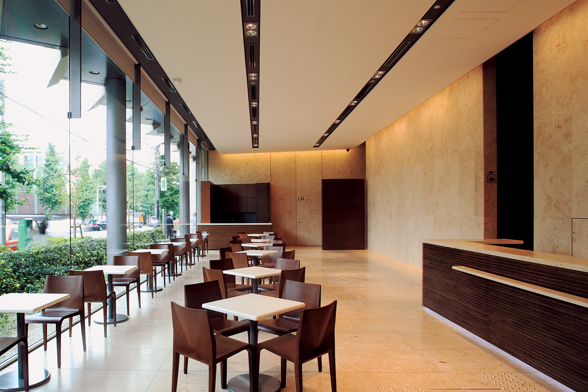
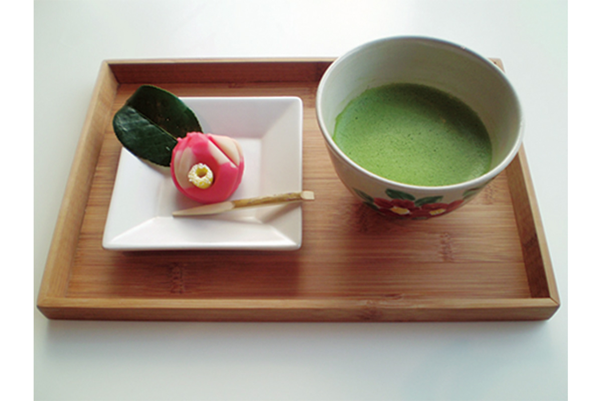
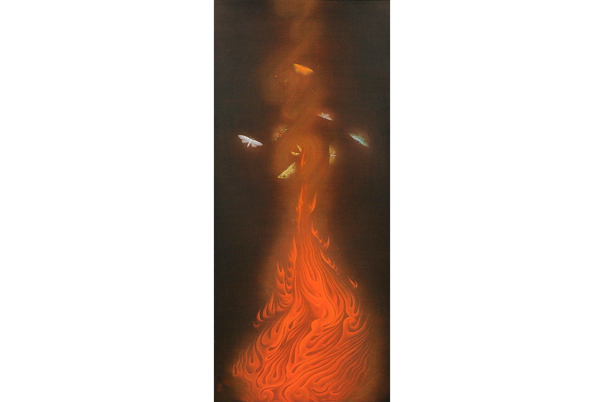

Токио · Хироо · музей
Музей Яматанэ в Хироо: японская живопись нихонга и сладости к каждой выставке

В выходной день в Токио можно отправиться по музеям: их в городе множество, и в некоторых интересно не только собрание, но и само здание или сад. Музей Яматанэ в Хироо, в десяти минутах от станции Эбису, целиком посвящён нихонга, японской живописи минеральными красками на шёлке и бумаге.
История
Коллекция, собранная в мастерских художников
Основу музея составила коллекция Танэдзи Ямадзаки (1893–1983), основателя брокерской компании «Яматанэ сёкэн» (её преемник SMBC Nikko Securities). В июле 1966 года он открыл первый в Японии музей, где показывают только нихонга.
Многие картины Танэдзи Ямадзаки покупал, лично общаясь с художниками, которые тогда были в расцвете сил. Среди них Тайкан Ёкояма (1868–1958), один из создателей современной японской живописи, Гёкудо Каваи (1873–1957), певец японского сельского пейзажа, и Сёэн Уэмура (1875–1949), прославившаяся портретами женщин. При втором директоре музей целиком выкупил работы Гёсю Хаями (1894–1935) из бывшей коллекции Атака.
В 2021 году в собрании было около 1800 работ. Основу собрания составляет нихонга Нового и Новейшего времени, но есть и картины эпохи Эдо, гравюры укиё-э и живопись маслом.

Музей
Нихонга при правильном свете
Музей продолжает мысль основателя о «служении обществу через искусство». Он хочет передать будущим поколениям живопись, которая выросла из японской природы и климата, и дарить зрителям радость, открытия и покой.
В спокойных залах стоят современные светодиодные светильники, и картины видно при свете, который им лучше всего подходит. В 2021 году музею исполнилось 55 лет. В год здесь проходит пять или шесть выставок, временных и специальных, под сезон или общую тему. К 2021 году музей начал давать пояснения к картинам на двух языках и рассказывать о нихонга в социальных сетях.
Кафе
Сладости по мотивам картин

В кафе «Цубаки» рядом с вестибюлем к каждой выставке подают свои японские сладости вагаси. Их делает старая кондитерская «Кикуя» из района Аояма, а мотив берут из картин, которые висят в залах.

«В кафе „Цубаки“ к каждой выставке подают оригинальные сладости от старой кондитерской „Кикуя“ из Аоямы. Они продаются только во время выставки. Есть и другие приятные мелочи, например скидка для посетителей в кимоно и юката»
сотрудник музея
Популярен и музейный магазин. Сувениры для него отбирает директор музея: она берёт вещи, которыми ей самой захотелось бы пользоваться.
Шедевр
«Танец пламени» Гёсю Хаями
Гёсю Хаями был одним из самых ярких мастеров нихонга начала XX века. Его «Танец пламени» музей называет среди главных шедевров своего собрания.

Летом 1925 года Гёсю Хаями жил в Каруидзаве, курортном городке в горах. Почти каждую ночь он разводил костёр и смотрел, как к огню слетаются ночные бабочки. На картине бабочки повёрнуты к зрителю, но художник расположил их кругом над пламенем, и кажется, что они кружат. Огонь написан по образцу буддийских картин и старинных свитков, а закрученные завитками кончики языков пламени выдают зоркий глаз самого художника. Глубокую тьму фона Гёсю Хаями нашёл после долгих проб. Он говорил, что этот цвет не смог бы повторить, даже если бы его попросили написать картину заново.
Музей Яматанэ
- Адрес
- Токио, Сибуя, Хироо, 3-12-36
- Телефон
- +81 50-5541-8600 (справочная служба)
- Часы работы
- 10:00–17:00, вход до 16:30
- Выходные
- понедельник (если это праздник, то следующий день)
- Цены / Вход
- взрослые 1000 иен, специальные выставки по отдельной цене
- Как добраться
- от станции Эбису (линия JR Яманотэ и другие) около 10 минут пешком. Парковки нет.
Фото: Норио Коикэ.